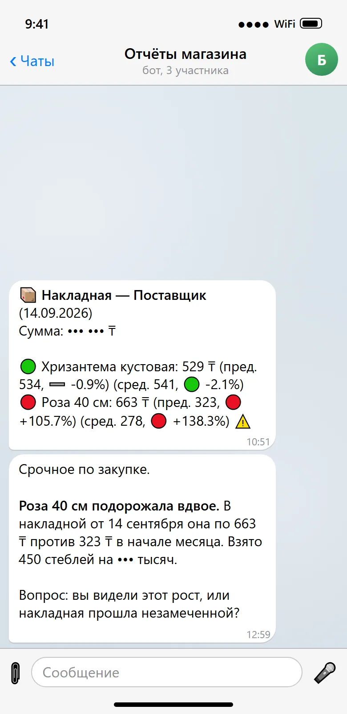
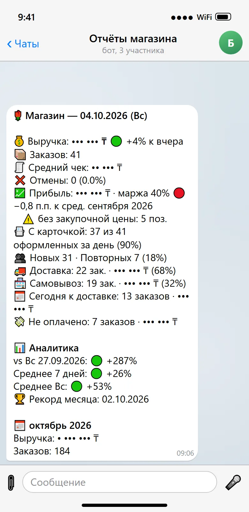
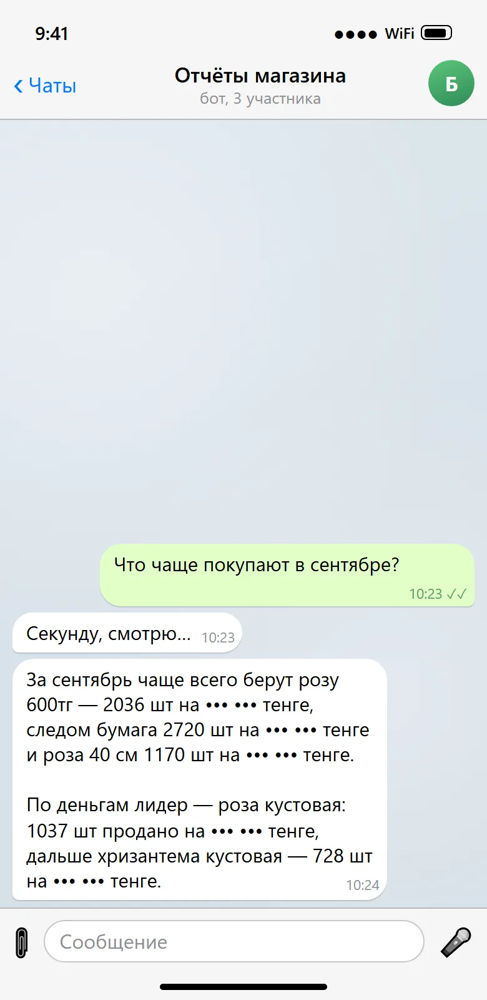
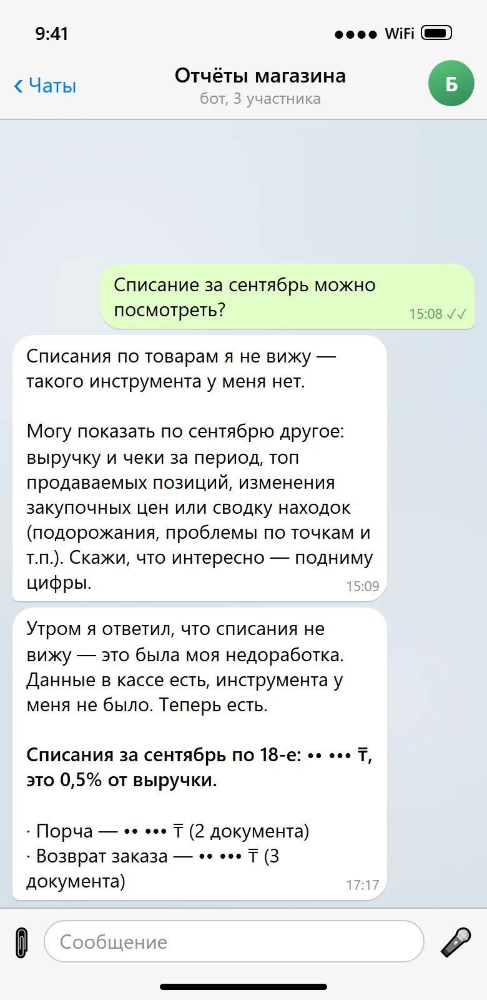
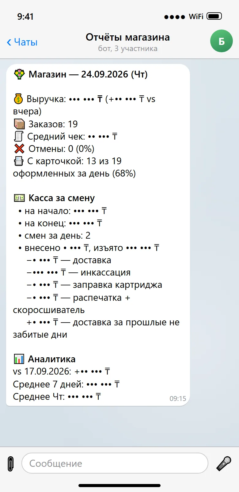
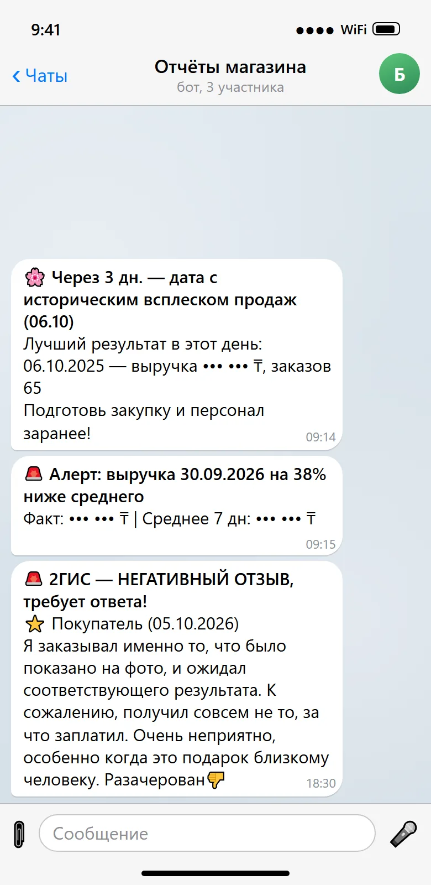
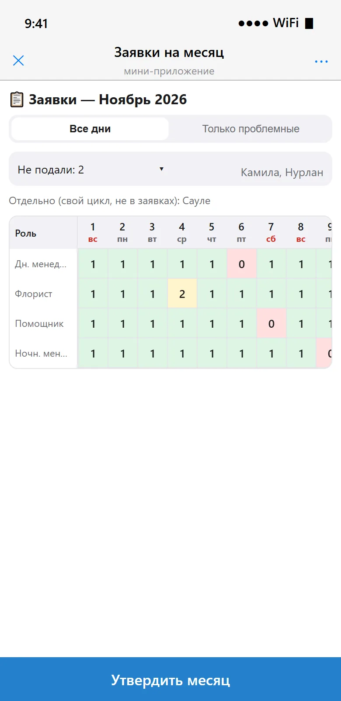
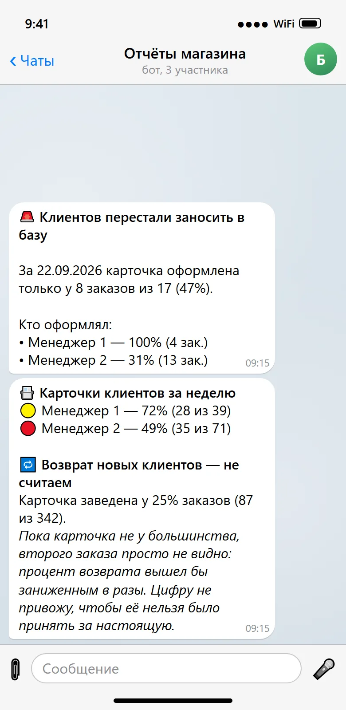
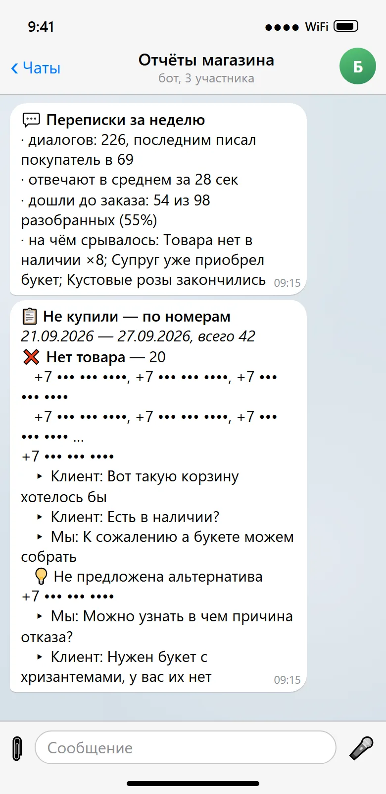
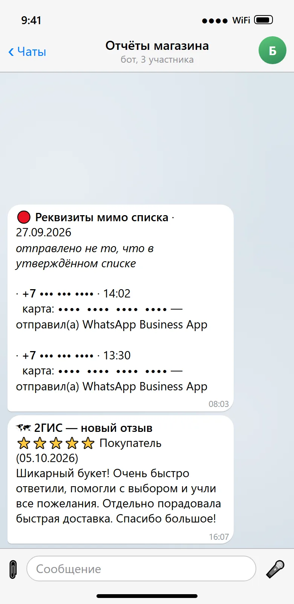

экраны
с любой кассой
экраны
с любой кассой
Табель
- сотрудники отмечают смену в телеграме
- опоздания видно сразу
- график на месяц, сотрудники записываются сами
- зарплата считается без формул
30 000 ₸ в месяцподключение 30 000 ₸
Подключается к кассе, сам считает отчёты, табель и зарплату. Вы задаёте вопрос в телеграме и получаете ответ по своим цифрам.
Хочу бесплатный разбор 3 дня, без оплаты
Сообщения настоящие, из групп магазинов за сентябрь и октябрь. Суммы, названия магазинов, имена и телефоны скрыты. Экраны табеля показаны на примере с условными сотрудниками.

Каждое утро: выручка, заказы, маржа, повторные покупатели, что не оплачено. Читается за минуту.

Спросили в группе, что чаще покупают в сентябре. Бот посчитал по кассе и ответил через минуту.

Если данных нет, бот так и говорит. Инструмент добавили в тот же день и прислали цифру.
Каждую накладную сверяет с прошлыми поставками. Роза подорожала вдвое, бот спросил, заметили ли.

Остаток на начало и конец, внесения и изъятия с комментариями. Видно, куда ушли наличные.

Напоминает о пиковых датах прошлого года, бьёт тревогу при просадке выручки, присылает отзывы 2ГИС.
Сотрудник нажимает кнопку, бот проверяет геолокацию и время. Опоздание считается само. Забыл закрыть: бот спросит.

Управляющая спрашивает, бот отвечает: кто вышел, кто опаздывает, кто отработал. Раз в неделю часы по каждому.

Управляющая ставит смены касанием, есть шаблоны 2/2 и Пн–Пт. Сохраняется в таблицу.

Сотрудник сам отмечает дни на следующий месяц и видит, сколько коллег уже записалось.

Светофор по ролям: где не хватает людей, где перебор. Одна кнопка утверждает месяц.

Видит, кто из менеджеров не прикрепил клиента к заказу. И честно говорит, когда возврат ещё нельзя считать.

Разбор диалогов за неделю: причина отказа по каждому и что менеджер упустил.

Если в счёте карта не из рабочего списка, бот пишет в тот же час. Отзывы 2ГИС приходят в группу.
Владелец заподозрил, что часть оплат уходит мимо кассы. Теперь бот читает переписку с покупателями и сразу пишет, если в счёте карта не из рабочего списка.
Ошибку нашли пересчётом по приходным накладным. Всё это время маржа считалась по неверной цифре.
Касса сравнивает с ценой в карточке товара, а не с прошлой закупкой. Бот сверяет каждую накладную с прошлыми поставками.
Бот разбирает переписки, где человек не купил, и показывает причину. Закуп видит, что брать, а не гадает.
Каждый день бот показывает, кто из менеджеров не прикрепил клиента к заказу. Год назад карточка была у 2% заказов, сейчас у 30%.
Управляющая вписывала формулу руками в клетку каждого, кто вышел, и однажды пропустила человека. Теперь бот сам видит, кто был на смене, и проставляет это в зарплатную таблицу.
Касса этого не показывает, для неё каждый заказ новый. Бот считает повторные покупки и возвращает людей рассылками.
экраны
с любой кассой
Табель, аналитика, возврат покупателей и переписки
Подключение всего пакета 150 000 ₸ вместо 180 000 ₸. Возврат покупателей и переписки работают через WhatsApp Business: сами сообщения Meta списывает с вашей карты напрямую. Аналитика работает с Posiflora, МойСклад и Posterix, табелю касса не нужна.
Бот только читает данные и ничего в кассе не меняет. Ваши цифры видим только мы: никому их не показываем и в примерах не используем. Ключ можно отозвать в любой момент.
Закуп, списания, повторные покупки, скидки, работа менеджеров.
Если они того стоят, подключаем бота. Если нет, вы ничего не платите.
Напишите, какая у вас касса и сколько точек.